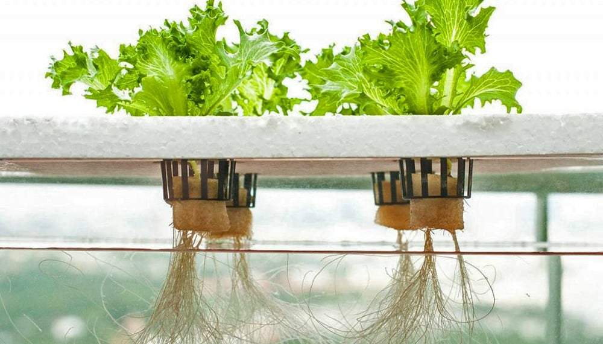

Curso de Hidroponía - Raíces Del Futuro
Aprende a cultivar sin suelo y revoluciona la agricultura
Qué aprenderás
- -Fundamentos de la hidroponía
- -Diseño y construcción de sistemas hidropónicos
- -Manejo de nutrientes y pH
- -Control de plagas y enfermedades
- -Ejemplos prácticos y casos de estudio
Este curso te enseñará las técnicas modernas de cultivo sin suelo, permitiéndote cultivar tus propias plantas de manera sostenible y eficiente.
En raices del futuro, estamos comprometidos con la innovación y la sustentabilidad en la agricultura para profesionales y entusiastas que desean aprender sobre esta tecnología revolucionaria. Nuestros cursos están diseñados para proporcionar conocimientos práctivos y teóricos para cultivar plantas de manera eficiente y sostenible.
Nuestra misión es proporcionar educación y recursos para las personas puedan cultivar alimentos de manera sostenible y eficiente, contribuyendo a un futuro mas verde y saludable.
Nuestra visión es ser lideres en la educación hidropónica , inspirada a una nueva generación de agricultures y jardineros sostenibles.
Fechas de ingreso
- Próxima cohorte: 15 de marzo de 2024
- Duración: 12 semanas
- Horario: martes y jueves de 6pm a 8pm
Inscríbete
Contacto
@raices.delfuturo
+57 311 1234567
Cra 12 # 34-56, Bogotá, Colombia